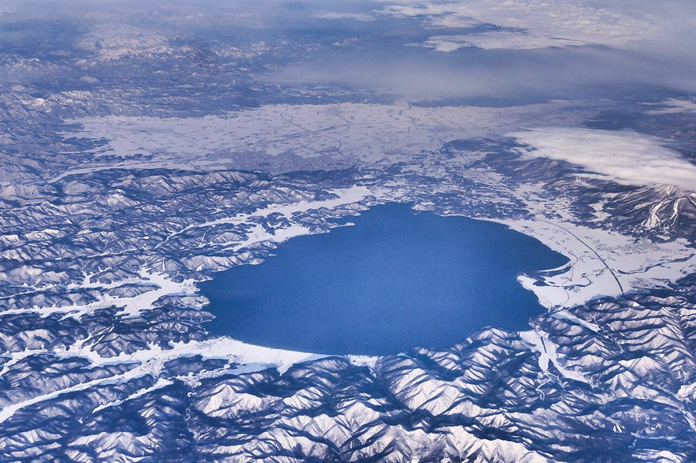
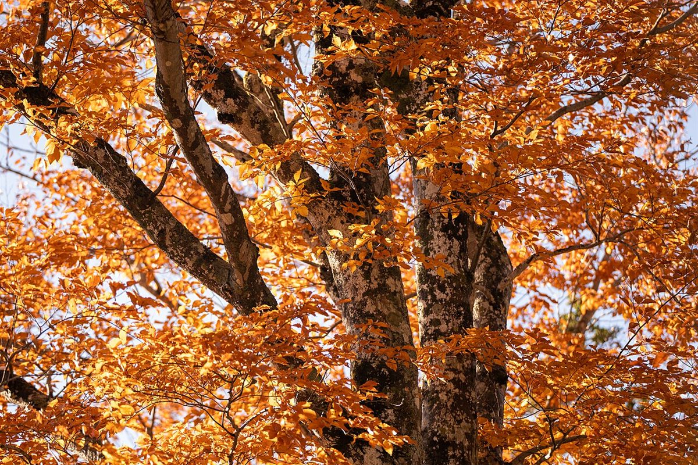
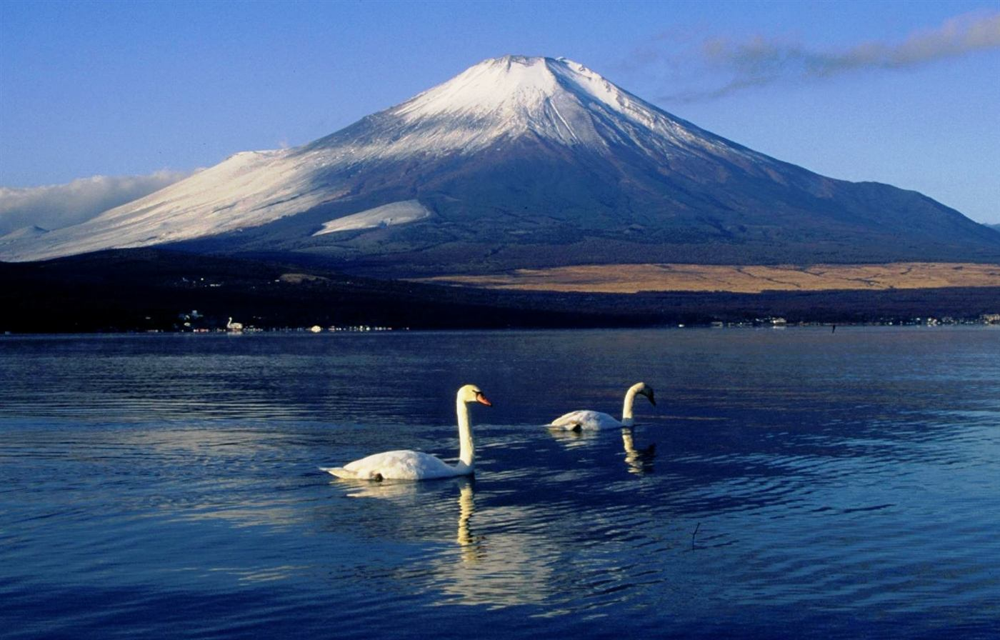

TOCHIGI SANO / SAKAE-CHO
おんだ整体・整骨院
栃木県佐野市栄町にある整体・整骨院です。お店の詳しいご案内は、いま準備を進めています。気になることは、お電話かInstagramからお気軽にどうぞ。

ラーメンの町、佐野。渡良瀬川と唐沢山のそばで。
佐野のまちで
佐野といえば、ご当地のラーメン、市内を流れる渡良瀬川、市街地の北にそびえる唐沢山。おんだ整体・整骨院は、そんなまちの栄町にあります。
お店のこだわりや施術の内容は、ヒアリングのうえ、このページに丁寧にまとめていきます。



お店の基本情報
- 屋号
- おんだ整体・整骨院
- 住所
- 〒327-0816 栃木県佐野市栄町23
- @onda.seitaiseikotuin
- 営業時間
- お電話でご確認ください
- 定休日
- お電話でご確認ください